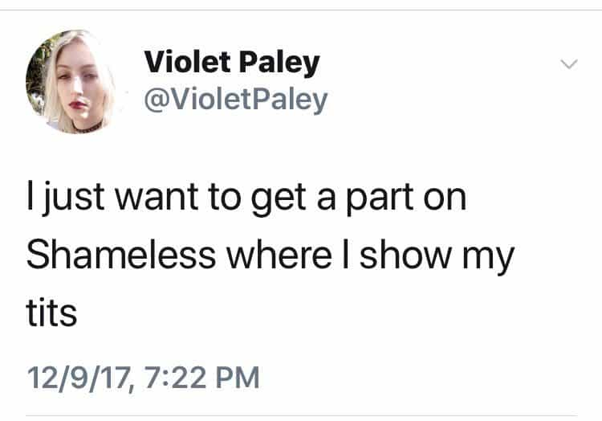
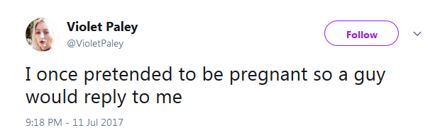
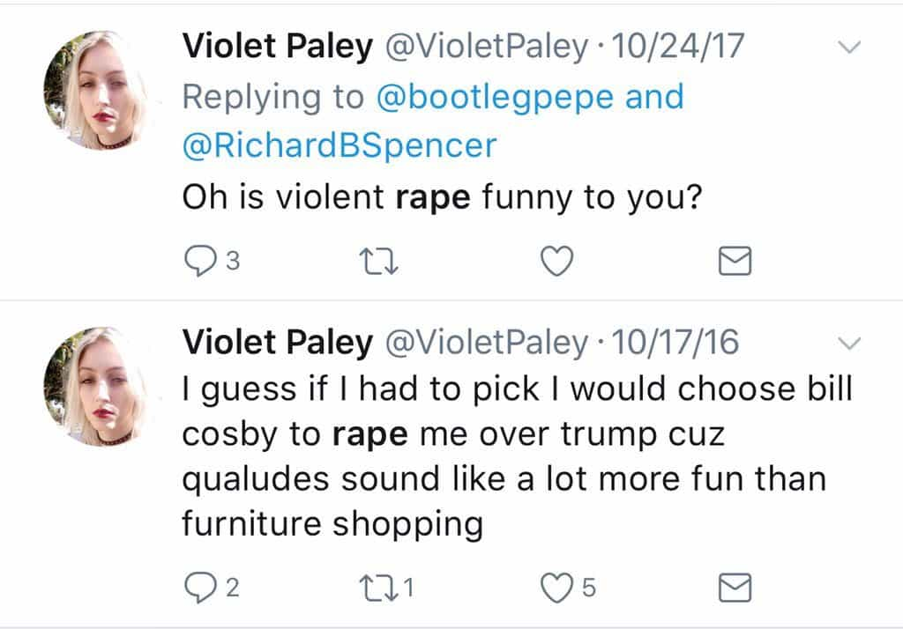
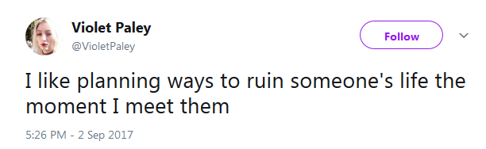
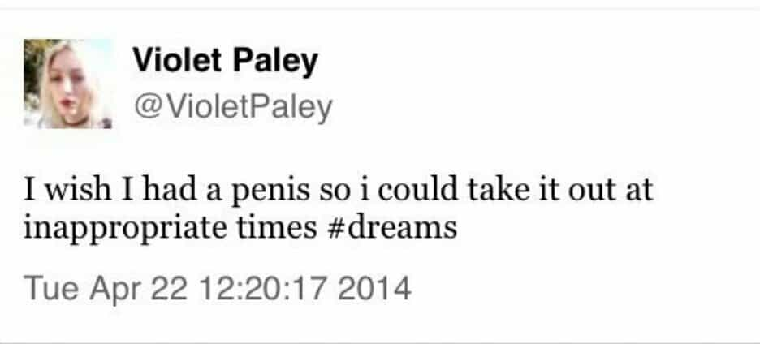

One of James Franco’s sexual accusers, Violet Paley, has a history of claiming to be pregnant to get male attention, calling men “inferior,” discussing whether she wants to be raped by Bill Cosby or Donald Trump, and talking about “fucking young children” on camera. Nonetheless, The Los Angeles Times and Time Magazine have taken “her truth” as literal Gospel truth.
Paley blocked me and began deleting tweets after I pointed out her stated desire to ruin people’s lives.
Here’s her pedophilia “joke”:
Below you can find her totally unsurprising feelings about men:
…and her charming career goals:

The next tweet about pretending to be pregnant to ensure male interest is reminiscent of the desperation of UVA rape hoaxer Jackie Coakley.

Despite her publicly recorded “joke” about sexually abusing young children and debating whether she would want to be raped by Cosby or Trump, she had the gall to hysterically accuse alt-right figure Richard Spencer of joking about rape:

Franco is merely the latest famous man to be amorphously and very unconvincingly accused of “sexual harassment,” “sexual assault,” and/or “rape.” The Los Angeles Times journalistically serenaded five women seeking to savage his reputation, giving them laudatory coverage in one of the most confusing #MeToo pieces we have ever read here at ROK. Time followed suit when focusing almost exclusively on Violet Paley herself.
These Franco accusers are the most broken we have ever seen
Sarah Tither-Kaplan claims she had no agency and was forced to sign contracts to appear nude in two James Franco films, just like the McDonald’s worker forced to flip burgers to pay their rent.
Paley has perhaps the most sociopathic antecedence of any named accuser—of any celebrity—so far. For a start, she seemingly has no problem with over-the-top revenge (if meeting someone for the first time could ever constitute a basis for seeking revenge).

We are really not short of instances where Paley displays what an extreme attention-seeker she is.

She’s also spoken about wanting to be the victim of “date rape.”
A fellow accuser of James Franco, Sarah Tither-Kaplan (it’s always a girl with a double-barreled surname!), is also engaged in farcical muckraking by saying the actor “sexually exploited” her after she voluntarily signed a contract to appear nude in film scenes. As she puts it, she was a struggling actress and wanted to eat, so she had no choice but to agree to the terms:
I have previously warned about how unstable women are conflating their own sexual and professional choices with “rape.” These turgid waters of frivolous allegations against men are showing no signs of receding.
The backlash has begun

Without discounting the penalties many innocent men have paid, increasing numbers of people are speaking out against the #MeToo witch-hunts. Women like Violet Paley and Sarah Tither-Kaplan are helping immensely.
In Macron’s France of all places, for example, a hundred women decried the triggered female “activists” trying to ruin male reputations without any objective evidence or due process. Across the Atlantic, whereas accused actor Jeremy Piven’s appearance with talk show host Stephen Colbert was canceled only weeks ago, Franco’s this week was not.
Our social and political climate may not be anywhere close to good right now, but the public is gradually becoming numb to the litany of opportunistic, unsubstantiated sexual mudslinging attempts against men.
Read More: The #MeToo Campaign Compares Not Replying To A Girl’s Texts With Raping Her


{kind=link}
{kind=link}